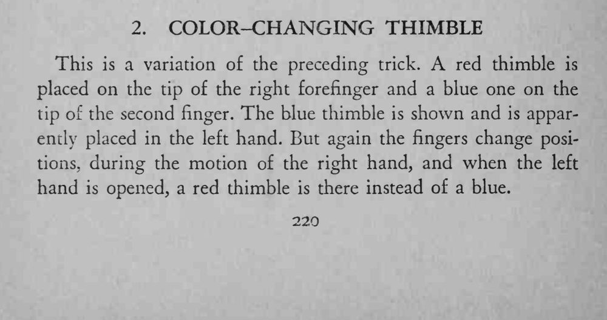

右手食指戴红拇指套、中指戴蓝拇指套；蓝拇指套被取下放进左手，摊开左手却变成了红拇指套。
换指要在右手晃动时完成，左手合拢的时机要卡准。

This is a variation of the preceding trick. red thimble is placed on the tip of the right forefinger and a blue one on the tip of the second finger. The blue thimble is shown and is apparently placed in the left hand. But again the fingers change positions, during the motion of the right hand, and when the left hand is opened, a red thimble is there instead of a blue.